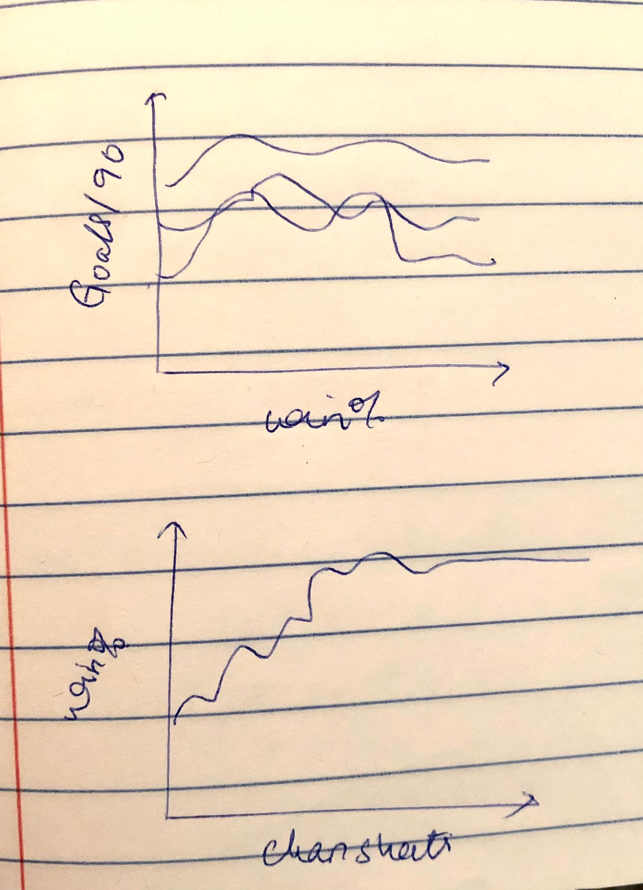

Back to Home Page
Design Documentation
Design Process:
- Used 2 files out of 5, as these made sense in the terms of visualization.
- We have filtered out data, included players who have played matches greater than equal to 15.
- For tuning the parameters, we have created various new attributes for better visualization. For examples shots on target/90min, shots/90min and goals against/90min.
Design Choices:
- A wide range of colors have been used for different players, and the different positions.
- A variety of visualizations have been used including scatter plot - the reasons being that every dot in the scatter plot would represent every player, if the cursor would be moved to the dot, depending on the graph information, the attribute information associated with the player would pop up. Similarly, bar-graphs have been used where every bar represents every player, line graph and so on.
- One of the key features is that all the graphs are interlinked. For example, if we choose one of the dots in the scatter plot of save % vs Win%, that particular player’s detail will be reflected in all the other graphs.
- For both dashboard , All the comparison can be done on the basis of
a) Specific players
b) Specific year
c) Specific Season
d) clubs
Rough Sketches:

Questions:
Questions for goalkeeper dashboard:
- Is there any relationship between number of saves made by the goalkeeper and win %.?
- Similarly, what is the relationship between W % and goals against /90 min?
- Can we say that more the number of clean sheets, greater is the W% or vice versa ?
- So finally on the basis of the above factors, we can find the and also compare the win % of all the goalkeepers in the league so far.
- The save % vs Win % of all the players have been shown in the first scatter plot (Top left). These attributes have a linear relationship where both of these attributes are directly proportional.
- In the second graph represents a line graph between the Goals against/90 and the Win%. The overall trend is decreasing with a few exceptions (spikes in both upwards and downwards direction)
- The Third graph represents the Clean Sheet vs Win% Scatter plot. We could say that the relationship is exponential here.
- Here Stefan is a great goalkeeper , as he has high save%, conceeds less goals/90min and has more clean sheets, therefore he has high win%.
Questions for Player dashboard:
- Is there any relationship between number of goals scored / 90 min and the position of the player?
- Is there relation of number of goals scored / 90 min with Number of shots taken & Number of shots on target?
- What is the relation between Goals/90 VS ASSISTS/90?
- The first graph represents Average number of Goals/90 and the players. Every player’s goals scored is displayed.
- The second bar graph (Top right) shows us the various positions of the player Vs there Average Goals/90. From this graph we see that maximum goals are scored by the forward players.
- The graph on the bottom left represents Average Shots/90 and Avg Shots on Goal/90. Again like mentioned before, as the number of shots increase, the better chances of Shots on Goal and scoring a goal.
- The last graph shows the relation between Goals/90 and Assists/90.
- Here Carlos Ruiz is a great player as we see that his avg Shots/90 is high and so is the SOG/90. He has a high Avg G/90 and Assista/90. As he scores more number of goals/90 we see that the position he is, in is the Forward position.
References:
- https://www.kaggle.com/josephvm/major-league-soccer-dataset